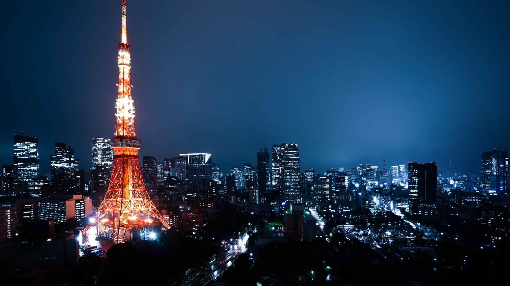

Tokyo Tower
La Torre de Tokio es una famosa torre de comunicaciones y observación en Minato, Tokyo. Con una altura de 333 metros, ofrece vistas impresionantes de la ciudad.
La Torre de Tokio es una famosa torre de comunicaciones y observación en Minato, Tokyo. Con una altura de 333 metros, ofrece vistas impresionantes de la ciudad.